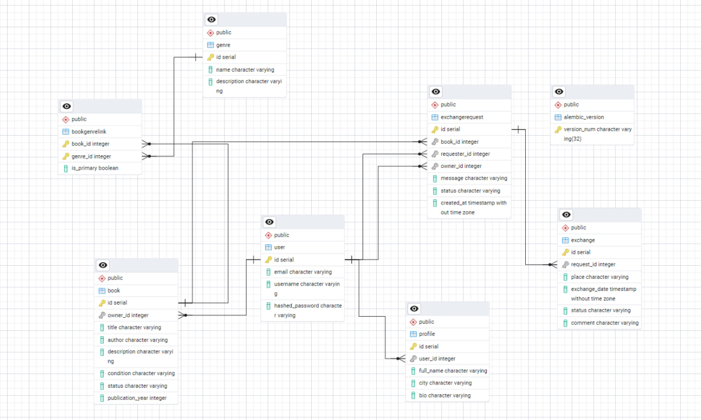

Текущее состояние
На текущем этапе выполнены: - практическая работа 1.1 базовое FastAPI-приложение с временными данными; - практическая работа 1.2 перенос приложения на PostgreSQL и SQLModel, реализация таблиц и связей; - практическая работа 1.3 настройка Alembic и миграций базы данных.
На следующих этапах планируется: - расширение модели данных сущностями обмена книгами; - реализация авторизации и JWT; - завершение лабораторной работы до максимального балла.
Лабораторная работа 1
Тема
Реализация серверного приложения FastAPI по теме буккроссинга.
Цель работы
Разработать серверное приложение на FastAPI с использованием PostgreSQL, SQLModel, Alembic и механизмов аутентификации, реализующее предметную область сервиса для обмена книгами между пользователями.
Выбранная тема
Разработка веб-приложения для буккроссинга.
Приложение позволяет пользователям: - регистрироваться и входить в систему; - создавать и редактировать профиль; - добавлять книги для обмена; - просматривать общий список книг; - отправлять запросы на обмен книгами; - принимать или отклонять запросы; - фиксировать и завершать обмены; - просматривать свои книги, запросы и обмены.
Выполненные практические работы
Практическая работа 1.1
На первом этапе было создано базовое приложение FastAPI с временными данными.
Были реализованы: - маршруты для книг; - маршруты для профилей; - маршруты для жанров; - базовая работа со Swagger.
Практическая работа 1.2
На втором этапе приложение было переведено на PostgreSQL и SQLModel.
Были реализованы таблицы:
- user
- profile
- book
- genre
- bookgenrelink
Были настроены связи:
- User -> Book
- User -> Profile
- Book <-> Genre через BookGenreLink
Для ассоциативной сущности BookGenreLink использовано дополнительное поле is_primary.
Практическая работа 1.3
На третьем этапе была подключена система миграций Alembic.
Были выполнены:
- инициализация Alembic;
- настройка alembic.ini;
- настройка migrations/env.py;
- создание и применение миграций;
- перевод проекта на управление схемой базы данных через Alembic.
Доработка модели данных в лабораторной работе
После выполнения практических работ модель данных была расширена в соответствии с логикой предметной области буккроссинга.
Дополнительно были добавлены сущности:
- ExchangeRequest — запрос на обмен книгой;
- Exchange — факт обмена книгой.
Таким образом, итоговая модель включает:
- User
- Profile
- Book
- Genre
- BookGenreLink
- ExchangeRequest
- Exchange

Реализованные возможности backend
В приложении реализованы:
Пользователи и аутентификация
- регистрация;
- вход в систему;
- генерация JWT-токена;
- получение текущего пользователя;
- смена пароля;
- хэширование паролей.
Работа с книгами
- просмотр всех книг;
- просмотр доступных книг;
- добавление книги;
- редактирование книги;
- удаление книги;
- просмотр собственных книг пользователя;
- запрос книги для обмена.
Работа с жанрами
- создание жанров;
- просмотр жанров;
- привязка жанров к книгам;
- получение жанров конкретной книги.
Работа с запросами на обмен
- создание запроса на обмен;
- просмотр входящих запросов;
- просмотр исходящих запросов;
- принятие запроса;
- отклонение запроса.
Работа с обменами
- создание обмена по принятому запросу;
- просмотр обменов пользователя;
- завершение обмена.
Логика предметной области
В рамках выбранной модели после завершения обмена книга помечается статусом exchanged и исключается из списка доступных книг.
Если пользователь захочет снова выставить такую книгу на обмен, он создаёт новую запись о книге в системе.
Реализованный frontend
Дополнительно был реализован пользовательский интерфейс на HTML, CSS и JavaScript.
Фронтенд включает страницы: - входа; - регистрации; - общеий список книг; - добавление книги; - список собственных книг; - входящие и исходящие запросы; - списк обменов.
Через интерфейс пользователь может: - зарегистрироваться и войти; - просматривать книги; - запросить книгу; - принимать и отклонять запросы; - завершать обмены.
Использованные технологии
- Python
- FastAPI
- PostgreSQL
- SQLModel
- SQLAlchemy
- Alembic
- JWT
- HTML
- CSS
- JavaScript
Вывод
В результате лабораторной работы было реализовано полноценное серверное приложение по теме буккроссинга.
Проект включает: - модель данных; - CRUD-операции; - связи one-to-many и many-to-many; - ассоциативную сущность с дополнительным полем; - систему миграций; - регистрацию и аутентификацию по JWT; - пользовательский интерфейс для основных сценариев работы.
Разработанное приложение соответствует тематике лабораторной работы и покрывает основной функционал сервиса для обмена книгами между пользователями.